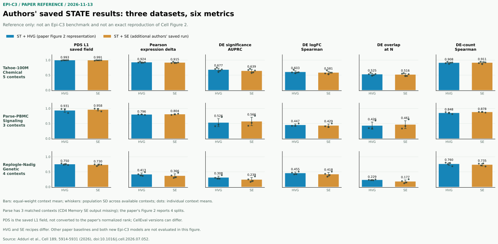

低代表性情境泛化
Tahoe 和 Parse 的目标情境分别使用 25% 扰动训练、5% 验证、70% 测试；Replogle-Nadig 使用 30% 训练、70% 测试，固定训练步数。其他情境提供相应扰动信息，不能称为全局未见扰动。
PAPER REFERENCE / 2026.11.13 / STATIC SNAPSHOT
依据用户提供的 Cell 论文正文、图 2 图注及方法部分，整理三类扰动、六项指标和评测划分；下图使用作者公开保存的 STATE 结果，不是本项目的 STATE 实测。
01 / AUTHOR-PUBLISHED REFERENCE
原创三行六列图，仅展示作者已公开的 ST+HVG 与 ST+SE 原始评分汇总；并非论文 Figure 2 的完整重现，也不是与 Epi-C3 的比较。

作者对两种表示保留共同扰动且两侧评分有限的配对项，再对各情境等权汇总。Tahoe、Parse、Replogle 分别有 5、3、4 个匹配情境；Parse 的 ST+SE CD4 Memory 存档缺失，而论文图 2 为 4 个划分。ST+HVG 与 ST+SE 的训练配方不同，图中差异是描述性结果，不是表示方式的因果效应。
L1 字段未换算为论文的归一化分数。 论文、历史绘图 notebook 与当前 cell-eval 的同名字段和尺度存在版本差异；图中保留作者存档原值，不声称等于原图分数。误差棒不表示生物学重复或置信区间。
论文方法以真实群体表达与预测群体表达的距离计算名次，令 r 为比正确扰动更接近预测的其他扰动数，T 为扰动总数，归一化为 1 - 2r/T。作者历史 Figure 2 notebook 对其当时的同名字段做 1 - 2v 变换。
本项目安装的 cell-eval 0.8.2 则对扰动相对于对照的表达效应排序，默认排除靶基因，以 1 - rank/T 返回分数，并使用排序结果处理并列。字段同名并不保证数据、排序和尺度相同；不能只改一个系数就认定与论文或作者存档等价。
| 数据集 | 指标 | 情境数 | 配对条件数 | ST+HVG | ST+SE |
|---|---|---|---|---|---|
| 正在读取参考数据；也可直接打开下方 JSON。 | |||||
来源及引用：Adduri 等，Predicting cellular responses to perturbation across diverse contexts with State，Cell 189, 5914–5931 (2026)，doi:10.1016/j.cell.2026.07.052。此处数值来自作者保存的 State Model 输出；适用 Arc State Model 许可和使用政策。本快照不分发模型权重或原始细胞数据。
02 / READING THE PAPER
出处：论文第 5916–5918 页、图 2 及其图注，另参照 STAR Methods e9、e15–e18 与表 S5。
Tahoe 和 Parse 的目标情境分别使用 25% 扰动训练、5% 验证、70% 测试；Replogle-Nadig 使用 30% 训练、70% 测试，固定训练步数。其他情境提供相应扰动信息，不能称为全局未见扰动。
以约 2,000 个高变基因的对数表达为主要输入和输出；预测与真实每条件细胞数相同。论文承认全数据选 HVG 会有泄漏风险，实践中建议仅用训练数据选取。
论文比较 PerturbMean、ContextMean、Linear、GEARS、scVI、CPA 和 scGPT architecture。PerturbMean 使用其他情境的同扰动平均效应；ContextMean 使用目标情境训练扰动的平均表达。
| 指标 | 解释 |
|---|---|
| 扰动区分度 | 按预测与真实扰动群体的 L1 距离排序，检查是否匹配正确扰动；论文将名次重标定到随机模型平均接近 0 的尺度。 |
| 表达变化 Pearson | 预测与观测的扰动相对对照表达变化是否相关；表达空间和对照定义必须一致。 |
| DE AUPRC | 以真实显著差异表达为标签，检验预测显著性对基因的排序。差异表达使用 Wilcoxon 检验及 BH 多重校正，FDR 阈值 0.05。 |
| logFC Spearman | 仅在真实显著 DE 基因上比较预测与真实 log fold change 的排序；论文中 STATE 并非在全部数据集上都是第一。 |
| DE overlap at N | N 为真实显著 DE 基因数，比较预测与真实显著基因集合；真实 N=0 时以 N 为分母的重叠率未定义，不能默认为有效零。 |
| 效应量 Spearman | 比较各扰动的预测与真实显著 DE 基因数量的排序；若数量恒定或有效扰动不足，相关系数未定义。 |
论文图 2 的误差棒是 Tahoe 5 个留出细胞系、Parse 与 Replogle-Nadig 各 4 个划分之间的标准差；这不是独立生物学重复。论文报告 STATE 在 AUPRC 上优于所比较基线，但在 Parse 与 Replogle-Nadig 的 logFC 相关性上并非最佳。
方法中的一般归一化描述为每细胞 10,000 UMI，而 Tahoe 专项段写 4,000；正式复现须核对具体数据及代码。STATE 的细胞集合和分布匹配并不证明真实单细胞轨迹或逐细胞因果配对。
03 / SEPARATE PROJECT EXPLORATION
以下试算的模型、数据划分和评分与上方作者存档不同，不做跨区排名，也不是新模型的成绩。
已在共享旧参考上比较早期 Epi-C3、适配 GEARS 和简单基线。候选图与打乱图接近；训练均值的响应 Pearson 更高。评分是自定义群体均值指标，不是论文的 cell-eval 基准。
查看独立旧 K562 图和详细限制 ↗每条件仅有 5–10 个独立预测 parent；这是全局留出药物，而非论文的低代表性情境划分。下面的值仅供检查管线，不支持与 STATE 比较。
| 指标 | 旧模型 | 无效应 | 可解释的有效条件 |
|---|---|---|---|
| L1 区分度原始字段 | 0.4444 | 0.6667 | 3 / 9；不能直接换算到论文尺度 |
| 表达变化 Pearson | -0.0391 | -0.0138 | 9 / 9 |
| DE AUPRC | 0.001106 | 0.001106 | 3 / 9；无信息量 |
| logFC Spearman | -0.0905 | 0.1171 | 1 / 9 |
| DE overlap at N | 0 | 0 | 真实 DE 数大于零的 3 / 9 |
| 效应量 Spearman | 未定义 | 未定义 | 0 / 9 |
两种预测在 9 个条件均无显著 DE 基因。原始包对 overlap 返回 9 个零，但其中 6 个条件的真实 DE 数也为零；上表按论文分母排除这 6 个条件，而不是把它们当作有效零。
原始汇总及包版本 ↗04 / WHAT IS STILL MISSING
缺失代表尚未评测或无法定义，不代表零分。
官方代码与隔离 CPU 环境已安装；本项目尚未完成 STATE 训练或评测。上图为作者保存结果。
共享 RNA 基础模型仍在训练；新调控网络分支及严格同细胞三模态分支尚无正式扰动预测成绩。至少三个合格三模态细胞系仍待核实。
PerturbMean、ContextMean、Linear、GEARS、scVI、CPA 和 scGPT architecture 尚未与新模型及 STATE 共同冻结划分并评测。
完成共享训练与数据暴露审计后，应冻结训练、验证和低代表性情境测试划分，统一基因轴、对照、预处理和预测细胞数；保存单细胞预测，使用同一版本的 cell-eval 与差异表达设置，并报告每项有效条件数及不确定性。不能用不同划分的分数拼成排行榜。